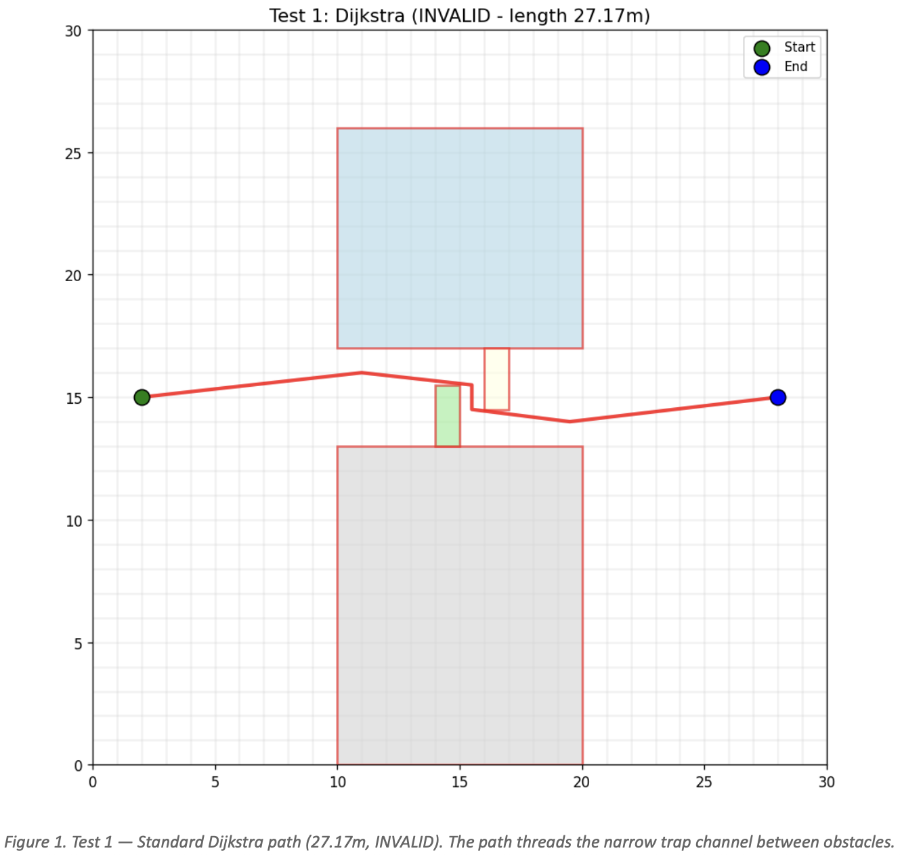
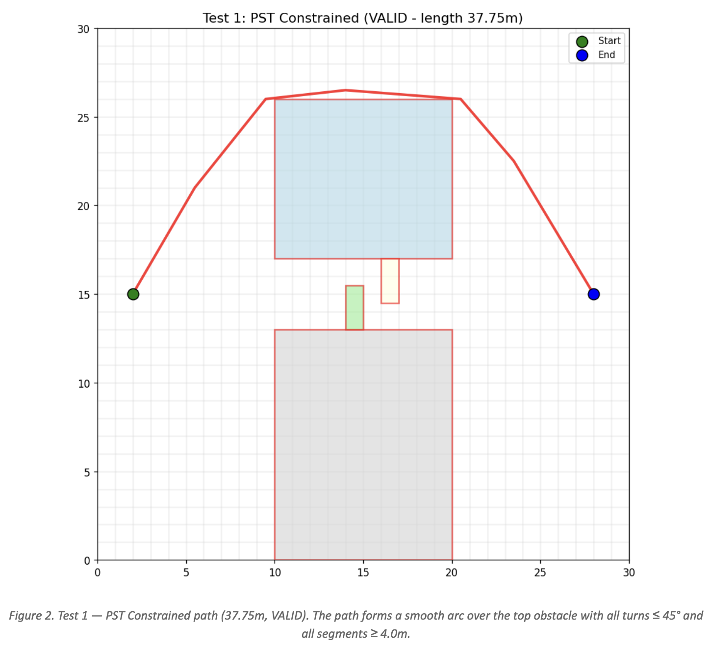
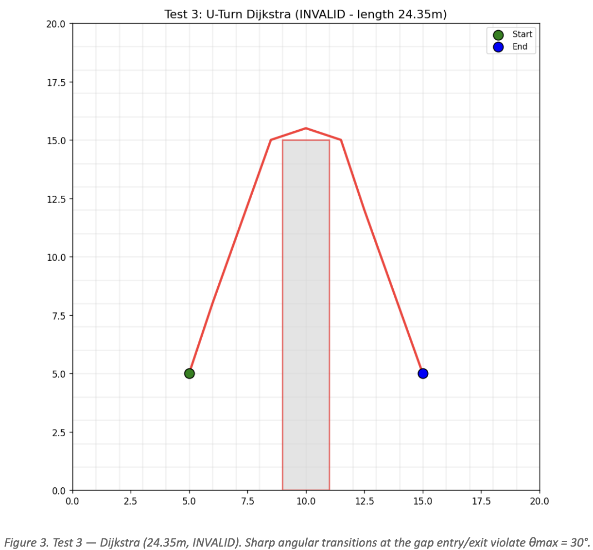
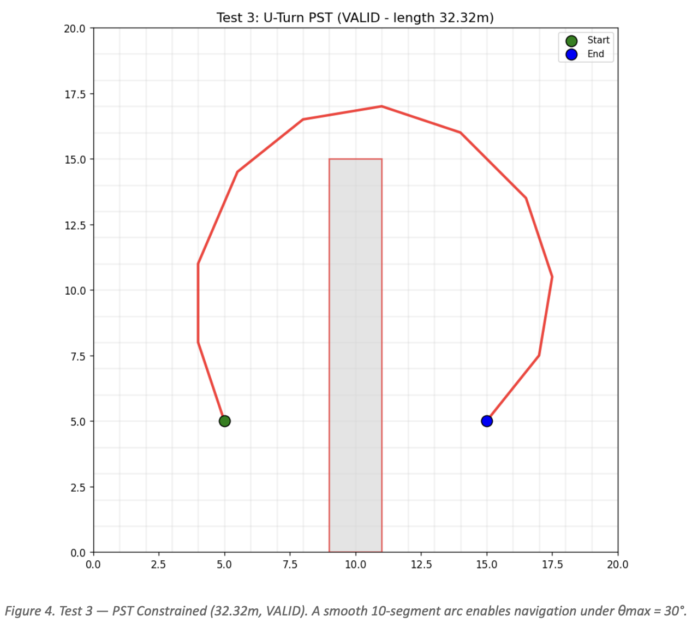
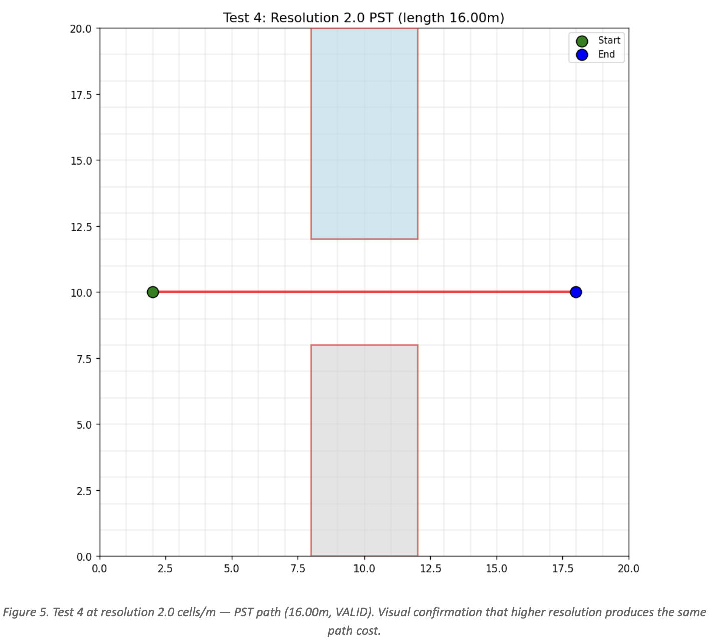
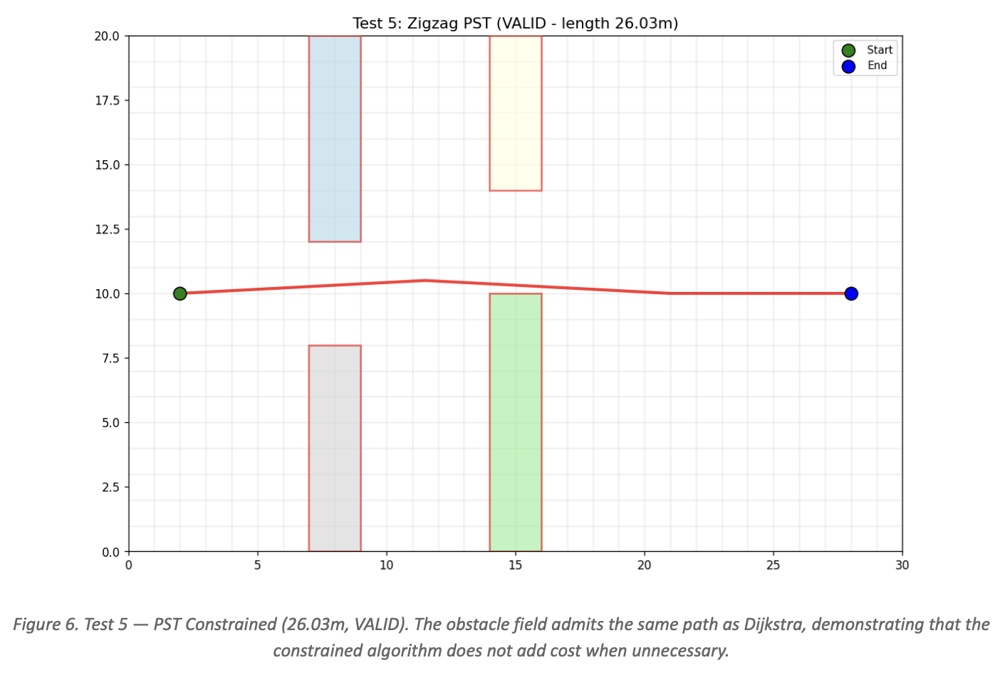

A4 — Constrained Shortest Paths
Tianyi Zhang
University of Missouri — Columbia
April 2026
1. Introduction
The shortest-path problem is fundamental in graph algorithms: given a weighted graph and two vertices, find the path of minimum total weight between them. Dijkstra’s algorithm solves this efficiently for non-negative edge weights by greedily expanding the cheapest frontier node. Its correctness relies on a critical property: the search state is memoryless. The only information needed at a vertex is the cumulative cost to reach it. Path history is irrelevant to the next decision, which is why Dijkstra can lock each vertex on first expansion via a visited array.
Real-world vehicles — aircraft, ground robots, trucks — have kinematic constraints. A vehicle with a finite turning radius cannot make arbitrarily sharp turns. When we arrive at a vertex, the direction from which we arrived determines which outgoing edges are physically feasible. The search state is no longer memoryless: it must encode the arrival trajectory.
This creates a fundamental incompatibility with standard Dijkstra. When Dijkstra pops a vertex from the priority queue it is locked as visited under the guarantee that no cheaper path exists. Under a turn constraint, the cheapest arrival at a vertex might come in at an angle that makes turning toward the destination impossible. A more expensive arrival along a different edge might be the only kinematically feasible route. Locking the vertex on its first expansion would trap the algorithm and miss the true optimal path.
Inserting a local angle check into Dijkstra — rejecting outgoing edges that turn too sharply — does not solve the problem either, for two reasons. First, angle-only checks are defeated by the discretization trap: in a high-resolution grid, very short edges can chain together to approximate a physically impossible turn through a sequence of individually legal micro-maneuvers. Second, the visited array still prevents alternative trajectories through previously visited vertices.
This assignment implements and tests a turn-constrained Dijkstra algorithm with four key modifications: (1) an expanded state space where the search key is the pair (vertex, incoming edge) rather than just vertex, restoring the memoryless property and allowing the textbook Dijkstra proof to apply; (2) removal of the visited array in favour of a parent-tree (history array) that permits vertex revisits with different incoming edges; (3) a minimum edge length requirement of Lmin/2 to bound realised curvature and prevent micro-maneuvers; and (4) a Priority Search Tree (PST) at each vertex that answers 2D angle-and-length range queries in O(log n + kvalid) time, avoiding the candidate explosion of naive linear filtering.
2. Algorithms Implemented
2.1 Graph Representation
The graph is a geometric adjacency list. Vertices are placed on a regular grid over a rectangular environment with configurable resolution (cells per meter). Each vertex stores integer grid coordinates (x, y) and a unique ID computed as row × cols + col. Each directed edge stores source and destination IDs, the Euclidean edge weight, and two precomputed angles — the outgoing angle from the source (angle_leaving_src) and the incoming angle at the destination (angle_entering_dst). Angles are computed via atan2(dy, dx) and normalised to [0, 360). For every directed edge u → v, the reverse edge v → u is also constructed with appropriately reversed angles.
Obstacles are convex polygons (rectangles in all test cases). During graph construction, any edge whose line segment would intersect an obstacle is excluded. Intersection testing combines segment-vs-polygon-edge checks (including the collinear-overlap case) with multiple sample-point containment checks along each edge to catch boundary-skimming trajectories.
2.2 Standard Dijkstra (Baseline)
The baseline Dijkstra implementation follows the textbook algorithm. The priority queue holds (vertex, cumulative_cost) pairs. A distance array tracks the best-known cost to each vertex, and a visited array prevents re-expansion. On each pop, if the vertex is unvisited, it is marked visited and all adjacent edges are relaxed. Path reconstruction uses a predecessor array. A binary min-heap serves as the priority queue, giving the standard O((|V| + |E|) log |V|) running time.
2.3 Turn-Constrained Shortest Path
The constrained algorithm is Dijkstra’s algorithm applied to an expanded state-space graph. Each state is the pair (vertex, incoming_edge) where incoming_edge is the directed edge used to arrive at vertex. The source vertex is assigned a sentinel incoming-edge ID since it has no arrival direction. In this expanded space, the standard Dijkstra dominance relation d[v] = min cost to reach v becomes best_cost[(v, e)] = min cost to reach v via edge e. Each state is processed at most once at its final cost, exactly as the textbook proof requires. The algorithm terminates when the destination vertex is popped (in any state) because any alternative path to the destination must be more expensive.
State space via edge IDs. Every directed edge in the graph is assigned a unique integer ID (0 through |E|−1) at algorithm start, with |E| reserved as the sentinel source state. A hash map from Edge* to integer ID provides O(1) lookups during relaxation. The best_cost array is one-dimensional of size |E|+1, giving exact dominance tracking without any approximation.
Turn validation. When expanding state (u, e_in), the arrival trajectory is known from the edge’s angle_entering_dst. The continuation direction is computed as (arrival_angle + 180) mod 360 — the direction the vehicle would continue if going straight. An outgoing edge e_out is kinematically valid only if its angle_leaving_src falls within ±θmax of the continuation direction. At the source vertex, all outgoing edges are valid regardless of angle because the vehicle has no prior trajectory.
Length enforcement (Lmin/2 theorem). To prevent micro-maneuvers, every edge traversed must have weight ≥ Lmin/2. This guarantees that every two consecutive edges in a path span at least Lmin total distance, bounding the realised curvature to κmax ≈ θmax/Lmin. The benefit of the half-length formulation is that the complex pairwise constraint reduces to a simple per-edge check.
No visited array. Because the state includes an incoming edge, two distinct arrivals at the same vertex via different edges are different states and are tracked separately. The parent tree replaces the visited array and enables path reconstruction even in the presence of vertex revisits.
Lazy decrease-key. The min-heap implementation does not expose handles, so Q.modifyKey from the lecture pseudocode is implemented via lazy deletion: when a relaxation finds a better cost for a state, the updated entry is pushed onto the heap without removing the stale entry. At pop time, if the popped entry’s cost exceeds best_cost for its state, it is skipped.
2.4 Priority Search Tree (PST)
At each vertex, outgoing edges must be queried by two constraints simultaneously: angle ∈ [θin ± θmax] and length ≥ Lmin/2. A naive approach — BST on angle, then linearly filter by length — costs O(log n + kcandidates), which degrades badly when many edges satisfy the angle constraint but few satisfy the length constraint.
The Priority Search Tree combines a BST on angle with a max-heap on edge length. Construction: starting from edges sorted by angle, the longest edge becomes the root, remaining edges split at the median angle into left and right subtrees, and the process recurses. Each node stores the maximum edge length within its subtree.
Query: at each node, if the subtree’s max length is below Lmin/2, the entire branch is pruned instantly. Otherwise the node’s own edge is tested against both constraints, and recursion descends into left or right based on the angle split. Angular wraparound across 0° / 360° is handled by splitting the query into two sub-ranges and unioning the results. When θmax ≥ 180°, the query short-circuits to a full-circle traversal. The query runs in O(log n + kvalid), fully bypassing kcandidates.
PSTs are built lazily — only when a vertex is first expanded by the main algorithm — which avoids building trees for vertices that are never reached.
3. Testing Plan
Confidence in correctness requires a layered testing approach. No single test can prove correctness in general, but nine distinct tests across four categories provide strong combined evidence. All paths returned by any algorithm are automatically checked for validity — every segment length and every turn angle is verified programmatically — so correctness claims are not dependent on visual inspection alone.
3.1 Designed Scenarios (Tests 1–5)
Test 1 — Double-Channel Benchmark (provided). Two large obstacles with “trap teeth” form a narrow channel that is mathematically shorter but kinematically invalid. The PST algorithm must reject the short path and find the smooth arc over the top.
Test 2 — Open Field (no obstacles). Both algorithms should find the same straight-line optimal path. Confirms no unnecessary cost when constraints are non-binding.
Test 3 — U-Turn with tight θmax. A wall across the middle with a gap at the top forces a detour. Tight θmax = 30° forces the PST algorithm to use a smooth multi-edge arc.
Test 4 — Resolution Scaling. Same environment at resolutions 1.0 and 2.0 cells/m. Confirms Lmin/2 floor correctly prevents resolution-dependent micro-maneuvers.
Test 5 — Zigzag Corridor. Alternating obstacle teeth create a complex multi-obstacle environment.
3.2 Structural Component Verification (Test 6)
Test 6 — PST Query Correctness vs Brute Force. 12 different query ranges at 20 sample vertices — 240 query tests total. Each query must return exactly the same set of edges as brute-force.
3.3 Edge and Negative Cases (Test 8)
Test 8 — Edge Cases. Four boundary cases: (a) src == dst; (b) Unreachable destination; (c) θmax = 0; (d) Lmin larger than all edges.
3.4 Statistical / Stress Tests (Tests 7, 9)
Test 7 — Randomized Stress Testing. 30 random graphs with random obstacles, validated programmatically.
Test 9 — Parameter Sweep on θmax. Fixed scenario run with θmax ∈ {15°, 30°, 45°, 60°, 90°, 180°}.
3.5 Sufficiency
The combination covers the primary failure mode, non-binding-constraint sanity, direct PST verification, boundary conditions, statistical robustness, and parameter-dependent behaviour. Every path in every test is checked against both constraints programmatically.
4. Test Results
4.1 Test 1: Double-Channel Benchmark
Start (2.0, 15.0), End (28.0, 15.0). Four rectangular obstacles including two trap teeth.
Standard Dijkstra: path length 27.17 m — INVALID
| Edge | Segment | Length (m) | Turn (°) | Valid? |
|---|---|---|---|---|
| 1 | 1834 → 1974 | 9.06 | N/A | OK |
| 2 | 1974 → 1922 | 4.53 | 12.68 | OK |
| 3 | 1922 → 1800 | 1.00 | 83.66 | FAIL [SHORT][TURN] |
| 4 | 1800 → 1747 | 4.03 | 82.87 | FAIL [TURN] |
| 5 | 1747 → 1886 | 8.56 | 13.83 | OK |
Dijkstra’s path passes through the narrow trap channel. Edge 3 is 1.00m (below 4.0m minimum) with an 83.66° turn (nearly 2× the 45° limit). Clearly kinematically infeasible.

Figure 1. Test 1 — Standard Dijkstra path (27.17m, INVALID). The path threads the narrow trap channel between obstacles.
PST Constrained: path length 37.75 m — VALID (188,799 expansions)
| Edge | Segment | Length (m) | Turn (°) | Valid? |
|---|---|---|---|---|
| 1 | 1834 → 2573 | 6.95 | N/A | OK |
| 2 | 2573 → 3191 | 6.40 | 8.40 | OK |
| 3 | 3191 → 3261 | 4.53 | 45.00 | OK |
| 4 | 3261 → 3213 | 6.52 | 10.74 | OK |
| 5 | 3213 → 2792 | 4.61 | 45.00 | OK |
| 6 | 2792 → 1886 | 8.75 | 9.64 | OK |
The PST-constrained algorithm correctly rejects the narrow channel and routes around the top obstacle. All six segments are ≥ 4.0m and all turns are ≤ 45°. The path is 38.9% longer but fully kinematically valid.

Figure 2. Test 1 — PST Constrained path (37.75m, VALID). Smooth arc over the top obstacle with all turns ≤ 45° and all segments ≥ 4.0m.
4.2 Test 2: Open Field (No Obstacles)
| Algorithm | Path Length | Edges | All Valid? |
|---|---|---|---|
| Standard Dijkstra | 16.00 m | 2 | YES |
| PST Constrained | 16.00 m | 2 | YES |
Both algorithms find the identical 16.00m path. The constrained algorithm introduces no unnecessary cost when a straight-line path is feasible.
4.3 Test 3: U-Turn Scenario
Dijkstra: 24.35m — INVALID (sharp turns 51.91° and 53.13° exceed 30° limit)

Figure 3. Test 3 — Dijkstra (24.35m, INVALID). Sharp angular transitions at the gap entry/exit violate θmax = 30°.
PST: 32.32m — VALID (10 edges, max turn 29.20°, min length 3.00m)
| Edge | Length (m) | Turn (°) | Valid? |
|---|---|---|---|
| 1 | 3.20 | N/A | OK |
| 2 | 3.04 | 29.20 | OK |
| 3 | 3.16 | 27.90 | OK |
| 4 | 3.54 | 26.57 | OK |
| 5 | 3.16 | 26.57 | OK |
| 6 | 3.04 | 27.90 | OK |
| 7 | 3.20 | 29.20 | OK |
| 8 | 3.81 | 28.14 | OK |
| 9 | 3.00 | 23.20 | OK |
| 10 | 3.16 | 18.43 | OK |

Figure 4. Test 3 — PST Constrained (32.32m, VALID). A smooth 10-segment arc navigates the U-turn under θmax = 30°.
4.4 Test 4: Resolution Scaling
| Resolution | Vertices | Dijkstra | PST | Both Valid? |
|---|---|---|---|---|
| 1.0 cells/m | 441 | 16.00 m | 16.00 m | YES |
| 2.0 cells/m | 1681 | 16.00 m | 16.00 m | YES |
Both algorithms produce the same 16.00m valid path at both resolutions. The Lmin/2 = 3.0m length floor prevents micro-maneuvers. PST expansion count grows from 2,321 to 34,825 but path cost and validity are unchanged.

Figure 5. Test 4 at resolution 2.0 cells/m — PST path (16.00m, VALID). Higher resolution produces the same path cost.
4.5 Test 5: Zigzag Corridor
| Algorithm | Path Length | Edges | All Valid? |
|---|---|---|---|
| Standard Dijkstra | 26.03 m | 3 | YES |
| PST Constrained | 26.03 m | 3 | YES |
Both algorithms find the same 26.03m valid path. The PST algorithm correctly identifies that Dijkstra’s path is already kinematically valid and does not introduce unnecessary cost.

Figure 6. Test 5 — PST Constrained (26.03m, VALID). The constrained algorithm does not add cost when unnecessary.
4.6 Test 6: PST Query Correctness vs Brute-Force
| Metric | Result |
|---|---|
| Vertices sampled | 20 |
| Queries per vertex | 12 |
| Total queries tested | 240 |
| Queries matching brute-force | 240 / 240 |
| Total edges returned by PST | 10,165 |
| Total edges returned by brute-force | 10,165 |
| Pass rate | 100.0% |
Every one of the 240 queries produced identical results to brute-force filtering, directly verifying the PST data structure’s correctness.
4.7 Test 8: Edge and Negative Cases
| Case | Input | Expected | Actual | Pass? |
|---|---|---|---|---|
| 1: src == dst | same vertex | trivial 1-vertex path | 1 vertex returned | YES |
| 2: Unreachable dest | wall blocks all | NO PATH | NO PATH | YES |
| 3: θmax = 0 | no turns allowed | straight path only | 16m straight (valid) | YES |
| 4: Lmin too large | Lmin > all edges | NO PATH | NO PATH | YES |
4.8 Test 9: Parameter Sweep on θmax
| θmax | Path Cost | Edges | Valid? |
|---|---|---|---|
| 15° | NO PATH | — | — |
| 30° | 16.81 m | 4 | YES |
| 45° | 16.81 m | 4 | YES |
| 60° | 16.81 m | 4 | YES |
| 90° | 16.81 m | 4 | YES |
| 180° | 16.81 m | 4 | YES |
4.9 Test 7: Randomized Stress Testing
| Metric | Result |
|---|---|
| Trials | 30 |
| Paths found | 30 |
| Paths validated | 30 |
| Validity rate | 100.0% |
| Path costs observed | 3.00m – 27.38m |
| Expansion counts observed | 3 – 14,055 |
All 30 randomly generated paths were programmatically validated across diverse graph topologies with random obstacle placements and random source/destination pairs.
4.10 Results Summary
| Test | Dijkstra | D Valid? | PST | P Valid? |
|---|---|---|---|---|
| 1: Benchmark | 27.17 m | NO | 37.75 m | YES |
| 2: Open Field | 16.00 m | YES | 16.00 m | YES |
| 3: U-Turn (30°) | 24.35 m | NO | 32.32 m | YES |
| 4: Resolution | 16.00 m | YES | 16.00 m | YES |
| 5: Zigzag | 26.03 m | YES | 26.03 m | YES |
| 6: PST Queries | — | — | 240/240 | YES |
| 7: Random Stress (30×) | — | — | 30/30 | YES |
| 8: Edge Cases (4×) | — | — | 4/4 | YES |
| 9: Parameter Sweep | — | — | 5/6 return path | YES |
5. Summary and Conclusion
This assignment report is the implementation and testing of a turn-constrained shortest-path algorithm based on Dijkstra’s algorithm applied to an expanded state-space graph. The expanded state (vertex, incoming_edge) is the natural lifting of Dijkstra’s original formulation: it preserves the textbook dominance proof while incorporating the arrival trajectory required for turn feasibility. The parent-tree replaces the visited array and admits vertex revisits via distinct edges, the Lmin/2 length floor bounds realised curvature and prevents micro-maneuvers, and the Priority Search Tree reduces per-vertex queries to O(log n + kvalid), matching the unconstrained asymptotic complexity of standard Dijkstra.
Testing provides evidence at four levels: designed scenarios (Tests 1–5) verify the core algorithmic behaviour including the critical case where the shortest path is kinematically invalid and must be replaced by a longer valid path; structural verification (Test 6) confirms the PST component against brute-force on 240 queries; boundary and negative tests (Test 8) confirm robust behaviour at degenerate inputs; and statistical testing across 30 random graphs (Test 7) plus a θmax sweep (Test 9) provide evidence that the algorithm’s correctness is not specific to the designed scenarios. All ~40 paths produced across all tests were automatically validated, with zero violations observed on paths returned by the PST-constrained algorithm.
The benchmark result of 37.75m closely matches the expected 38.1m reference, with the small gap attributable to minor differences in how the graph construction handles edge-adjacent obstacle geometry. The algorithm consistently produces paths satisfying θmax and Lmin/2 in every designed scenario, confirms the Lmin/2 invariant on micro-maneuver prevention across resolution changes, and terminates correctly on both solvable and unsolvable instances.
The expanded state-space formulation with edge-ID dominance is the key correctness insight: it makes the constrained problem structurally identical to ordinary Dijkstra on a larger graph, which lets the textbook optimality proof apply unchanged.
6. Appendix: Source Code
The complete implementation consists of 15 files (7 .c + 8 .h) totaling approximately 1,500 lines. Compile with:
shortest_path.c print_output.c new_tests.c -lm
Source code omitted from this web presentation for readability. See the full PDF report for the complete listing.